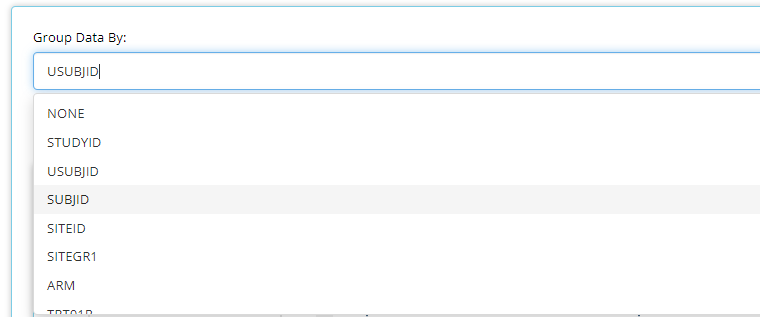
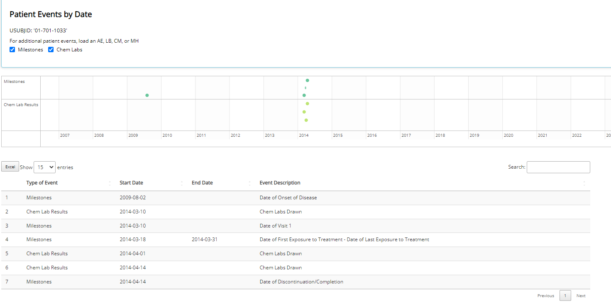

Clinical trials 데이터가 CDISC 형태로 통일되어 가며, CDISC에 대한 관심도가 많아지고 있다. 오늘 CDISC와 대략적인 data format에 대해 배워보고, CDISC ADaM 데이터를 시각화 해주는 Shiny App 오픈소스 패키지인 tidyCDISC에 대해서 소개하려고 한다.
1. CDISC란? 왜 중요할까?
임상시험에서 수많은 종류의 데이터들이 수집된다. 임상시험 데이터는 의약품의 안전성과 유효성을 증명하며, 임상효과를 확인하고 이상반응을 조사하는 데 사용될 수 있어 매우 중요하다.
그러나 문제는 각 기관마다 통일된 규정이 없어서 데이터들의 변수 이름도 제각각이고, 데이터의 구조와 정의가 다 다르다.
▶️ 데이터를 정리하고 분석하는지에 대한 국제적인 표준이 없다면, 데이터를 해석하고 설명하는 데만 상당한 시간과 노력이 필요하여서 비효율적이다.
이런 비효율성을 없애고자 CDISC라는 비영리 단체가 1997년에 설립되어 규제기관, 제약회사, 임상연구 조직 등을 규합해서 임상시험 데이터의 표준을 정의하였다.
이제 미국 FDA나 일본의 PMDA와 같은 규제기관들도 신약개발 및 임상시험에서 데이터를 CDISC 표준으로 제출하기를 요구하게 되는 만큼 CDISC 표준은 널리 사용되고 있기에, 이에 대해서 잘 알고 있는 것이 중요하다.

image from Kor J Clin Pharmacol Ther
CDISC에는 데이터와 관련된 SDTM (Study Data Tabulation Model) 과 ADaM (Analysis Data Model)이 있다.
SDTM은 임상시험의 데이터를 제출하기 위해 정의한 표준으로, Raw Data를 정해진 형식으로 정리/정의한다.
SDTM을 이용하여 데이터분석이 가능하도록 변환한 형태로 변환하는게 ADaM이다.
How we build ADaM from SDTM
즉, ADaM은 데이터의 도출과 분석, SDTM은 Raw Data를 형식에 맞게 잘 정리하여 테이블에 정렬하는 것!
이 글에서는 ADaM에 대해서 알아본 후, tidyCDISC에 대해서 소개하고자 한다.
2. ADaM이란?
우선 ADaM의 데이터 구조에 대해서 배우기 전에, CDISC에서 정의한 ADaM의 Fundamental Principles 를 확인해 보자.

image from PharmaSUG
ADaM의 Fundamental Principles 는 데이터셋 구조가 아닌 분석 요구와 이해에 중점을 둔다. ADaM은 분석 가능한 데이터셋을 만드는 역할을 한다.
ADaM에서 정의된 Data Structure는 4개가 있다:
- ADSL (subject-level analysis dataset)
- BDS (basic data structure)
- OCCDS (occurence data structure)
- OTHER

copy of “ADaMIG v1.1 Figure 1.6.1 Categories of Analysis Datasets”
이런 Data Structure가 왜 필요할까?
- 분석을 위한 structure가 필요하기 때문이다!
분석 목적에 따라 맞는 특정한 data structure를 사용한다.
2.1. ADSL (Analysis Data Subject Level)
ADaM의 첫 번째 데이터 구조는 ADSL(Analysis Data Subject Level)이다.
ADSL은:
개별 연구대상자를 가진다, contains one record per subject
한 행에 대상자의 정보, 임상시험의 정보 등 SDTM의 한 대상자의 모든 자료가 들어가고, 다른 ADaM datasets의 분석에 필요한 data가 있다.
주요 변수는 ID (USUBJID), 약물그룹(TRT01P), 시작일(RFSTDTC), 종료일 (RFENDTC) 등이 있다.
ADSL example in tidyCDISC
다른 변수들의 의미는 여기를 확인할 수 있다.
2.2. BDS (Basic Data Structure)
ADaM의 두 번째 데이터 구조는 BDS(Basic Data Structure)이다.
한 대상자에 대한 반복적인 혹은 여러 번의 결과가 나타나 있는 데이터이다.
대상자, 분석 변수, 분석 시점별로 하나 이상의 데이터가 존재한다.
BDS 에서는 분석하려는 매개변수(예: PARAM 및 관련 변수들)을 설명하고 분석할 값 (예: AVAL 및 AVALC 등 관련 변수들)을 포함하는 중앙 변수 집합이 포함된다.
- PARAM: 분석하고자 하는 값에 대한 설명
- AVAL/AVALC: 분석하고자 하는 값
ADSL 및 OCCDS와 같은 다른 데이터 구조의 기초 또는 시작점이기 때문에 “Basic”라고 한다.
기본 데이터 집합(예: 치료, 인구학 및 안전성 데이터)을 처리하는 데 사용되는 데이터 구조이다.
반복측정이 계획되어 있거나, 이미 반복적으로 측정한 값이다.
BDS는 부작용이나 기타 발생 데이터(other occurrence data)의 발생률 분석은 지원하지 않는다.
모든 ADSL 변수가 BDS dataset에 있을 필요가 없다.
2.2.1. ADLB (Laboratory Data Analysis Dataset):
검사 데이터, laboratory test results data.
주요 변수는 ID (USUBJID), 검사항목 (LBTESTCD, LBTEST), 결과값 (LBORRES)이 있다.

CDISC. (2011). Analysis Data Model Implementation Guide: ADaM Version 1.1.
2.2.2. ADEFF (Analysis Dataset Definition):
메타데이터 (다른 데이터를 설명해 주는 데이터) 테이블이다.
분석하려는 data set의 내용 및 구조를 설명한다.
ADaM dataset를 만드는데 ADEFF table이 사용된다.
The ADEFF table should be completed before creating the analysis datasets to ensure consistency in variable definitions and to allow traceability of the analysis datasets back to their source data.
 table from CDISC.org
table from CDISC.org
2.2.3. ADTTE (Analysis Data Time-to-Event):
임상 시험에서 기록하고자하는 사건(event)의 발생 시간
more detailed information about ADTTE could be found here

[PARAMCD:Parameter Code, STARTDT: Time to event origin date for subject, ADT: Analysis date, SRCDOM: Source Data]
2.3. OCCDS (Occurence Data Structure)
ADaM Dataset structure 중 세 번째 OCCDS는 한 대상자에 대한 반복적인 결과가 나타난다는 점에서 BDS와 비슷하다.
하지만, OCCDS는 BDS처럼 반복적으로 측정되지 않으며, 한 대상자에 대한 결과가 한 건도 발생하지 않거나, 이와 반대로 무수히 많이 발생할 수도 있다.
OCCDS 는 부작용과 같은 discrete event를 분석하는 데 사용된다.
CDISC ADaM structure for OCCDS v1.0
OCCDS의 종류를 알아보자!
2.3.1. ADAE (Adverse Events Analysis Datset):
- 부작용 정보에 대한 dataset
- One record per subject per adverse event
- 주요 변수는 임상시험 과정: ID (USUBJID), 부작용종류 (AETERM), 발생일 (AESTDTC), 해결일 (AEENDTC), 중증도(AESER)
ADAE example in tidyCDISC
2.3.2. ADCM (Concomitant Medications Analysis Datase)
복용 약물정보
주요 변수는 ID (USUBJID), 약물명 (CMTRT), 시작일 (CMSTDTC), 종료일 (CMENDTC), 용량 (CMDOSFRQ)
One record or multiple records per subject per recorded medication occurrence or constantdosing interval
example ADCM dataset: 
2.4. OTHER
OTHER의 dataset은:
- ADaM의 Fudamental Principles 및 기타 ADaM 규칙(naming convention 등등)을 따르지만, ADaM의 정의된 3개의 데이터 구조(ADSL, BDS, OCCDS)를 따르지 않는다.
details on other
3. R Shiny App tidyCDISC
tidyCDISC는 오픈소스 프로그램이며, ADaM-ish 데이터로 인터랙티브한 표, 그래프, 그리고 환자들의 프로필 생성을 할 수 있는 shiny app이다.

tidyCDISC의 데모를 같이 실행해보자 ▶️ https://rinpharma.shinyapps.io/tidyCDISC/
tidyCDISC의 세 가지 주요 기능:
- Drag-and-Drop Table Generator
- Population Explorer (Graph Generator)
- Individual Explorer/ Patient Profile Viewer
각 기능에 대해 세 개의 R 패키지를 사용한다:
- Table Generator ▶️ GT 패키지
- Population Explorer ▶️ plotly 패키지지
- Patient Profile Viewer ▶️ timevis 패키지지
차근차근 각 패널이 어떤 기능이 있는지 확인해 보자!
3.1. Data Upload 패널
맨 처음 tidyCDISC 데모에 들어가면 아래와 같이 Data Upload 패널이 랜딩 페이지로 보일 것이다. 데모에는 CDISC Pilot Data 예시 데이터가 사용되고 있다.

tidyCDISC 앱은 ADaM(-ish) 데이터가 없으면 사용할 수가 없다. 앱을 실행하려면 최소한 ADSL sas7bdat 파일이 필요하며, 더 많은 데이터가 있을수록 더 많은 기능과 인사이트를 탐색할 수 있다.
3.2. Table Generator 패널
다음 Table Generator 탭에 들어가면 인터랙티브한 테이블을 만들 수 있다.
Table Generator 탭은 두 개로 구분된다. 왼쪽 영역은 테이블을 만드는 데 사용되는 드래그 앤 드롭 인터페이스이고 오른쪽 영역은 실시간 테이블 출력한다.
우선 테이블을 생성하려면 왼쪽의 변수 블록을 “Variable” 드롭 영역으로 끌어다 놓고, ANOVA, CHG, MEAN, FREQ 등등을 “Stats” 드롭 영역에 끌어다 놓으면 된다.

- 변수들 위에
Standard Analysis Tables드롭 다운에는 규제 당국에 제출할 문서에 공통으로 포함되는 테이블 list가 나온다.- 테이블 중 하나를 선택하면, 해당 테이블을 생성할 때 필요한 변수와 Stats가 올바른 순서로 선택되어 원하는 테이블을 생성합니다.
Group Data By드롭다운을 사용하여 범주형 변수들의 통계량을 계산할 수도 있다.

- 밑에
Table Title로 테이블의 이름을 설정하고 파일로(RTF, CSV, 그리고 HTML) 저장이 가능하다.

3.3. Population Explorer 패널
다음으로 Population Explorer 탭에서 여러 차트로 데이터 시각화를 할 수 있다.

- Type of Chart:
- 원하는 차트의 종류를 고를 수 있다.
- General plot controls:
- 차트 유형에 따라 바뀐다.
- 일반적으로 BDS 데이터 소스의 변수 또는 매개 변수 등을 사용하여 축을 설정하도록 된다.
위 설정에 따라 메인 패널에는 아래와 같은 인터랙티브 그래프가 표시될 것이다.

3.4. Individual Explorer 패널
마지막 탭은 Individual Explorer이다. 이 탭에서는 특정 환자 데이터를 탐색하기 위해 사용됩니다. 처음 들어가시면 환자의 USUBJID로 환자를 선택할 수 있는 기능이 있습니다. 특정 그룹에 포함된 환자 데이터를 탐색해야 할 경우 (예를 들어, 나이가 10세 이하), Advanced Pre-Filtering을 이용하면 된다.

Details on filtering.
특정 환자를 선택한 후, 밑에 Events에서는 환자 타임라인과 events에 대한 데이터 테이블을 확인할 수 있다.

Events 탭 바로 옆에 Visits탭에서는 BDS data sets에서의 PARAMS과 Study Visit의 plot과 데이터 테이블을 보여준다.

환자의 특정 변수별 plot을 담은 파일을 png 혹은 html 파일로 다운 가능하다.
마치며
지금까지 CDISC의 ADaM에 대해서 4개의 data structure를 살표보며 알아갔고, ADaM 데이터를 활용한 오픈소스 프로그램인 tidyCDISC를 사용하는 방법에 대해서 배웠다.
여러 해외 규제기관에서 임상이나 비임상시험 데이터 제출시 CDISC 적용을 의무하고 있는 만큼, CDISC 표준을 잘 이해하고 자료 관리에 있어 적용이 필요해 보인다.
CDISC의 전문가가 되지 않는한 어렵고 복잡한 것을 알 필요는 없지만, 임상시험 결과가 ADaM을 이용해서 만들어야 하기 때문에 적어도 CDISC data format과 임상시험의 전체 흐름에 대해서 잘 파악하고 있는 것이 중요할 것 같다.
Reference
Jeong, Sunok, et al. “International Standard in Electronic Clinical Trial.” Journal of Korean Society for Clinical Pharmacology and Therapeutics, vol. 15, no. 1, Korean Society for Clinical Pharmacology and Therapeutics, 2007, p. 20. Crossref, https://doi.org/10.12793/jkscpt.2007.15.1.20.
“Get Started With {tidyCDISC}.” Get Started With {tidyCDISC}, cran.r-project.org/web/packages/tidyCDISC/vignettes/getting_started.html.
“SDTMIG v3.3.” SDTMIG v3.3 | CDISC, www.cdisc.org/standards/foundational/sdtmig/sdtmig-v3-3/html#Representing+Relationships+and+Data.
“TidyCDISC an Open Source Application to Interactively Create Tables, Figures, and Patient Profiles.” YouTube, 17 Aug. 2020, www.youtube.com/watch?v=EFGkHrV0WbY.
Li, Chengxin. “The Dataset Generation for Survival Analysis With the ADaM Basic Data Structure for Time-to-Event Analyses (ADTTE) Standard.” Pharmaceutical Programming, vol. 5, no. 1–2, Informa UK Limited, Dec. 2012, pp. 1–4. Crossref, https://doi.org/10.1179/1757092112z.0000000001.
Reuse
Citation
@online{kim2023,
author = {Kim, Seoyoon},
title = {ADaM in {CDISC} and {tidyCDISC}},
date = {2023-05-02},
url = {https://blog.zarathu.com/posts/2023-04-28-tidycdisc/},
langid = {en}
}